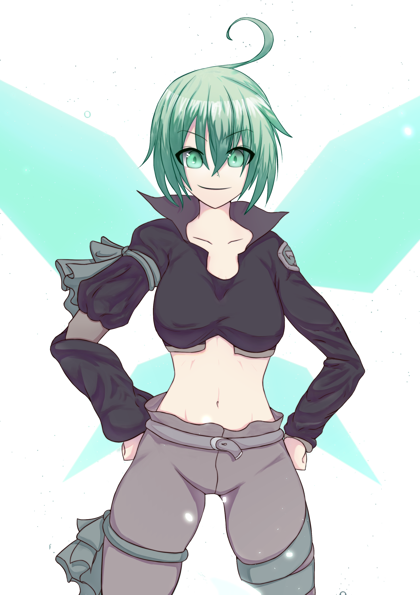

-Al morir aplican un área de efecto de debilidad al daño no-físico del 50%.
-Al morir aturden (impidiendo cualquier acción) a todos los enemigos en un área.
-Al morir infligen 25/35 de daño no-físico a todos los enemigos en una área.
Will´o Ironheart
Will´o Wisps
Cada ataque básico genera un “wisp” (unidad básica de 1 punto de impacto (vida)). Cada wisp generado puede tener una de las siguientes pasivas:-Al morir aplican un área de efecto de debilidad al daño no-físico del 50%.
-Al morir aturden (impidiendo cualquier acción) a todos los enemigos en un área.
-Al morir infligen 25/35 de daño no-físico a todos los enemigos en una área.
Faery Fire
Cada cinco ataques básicos Will´o aplicará “faery fire” a todos los enemigos en la zona cercana a ella, aumentando el daño no-físico que reciben en un 200%Fairy´s Bladeworks
Al cargar totalmente su energía, y la habilidad es activada Will´o recorrerá el mapa rápidamente golpeando a cada enemigo de una a tres veces, aplicando su pasiva y aplicando un efecto de estado de “daño demorado”. Al terminar esta habilidad, todos los wisps generados por esta habilidad explotarán aplicando su pasiva en un área 200% más grande que lo normal.
Will´o Ironheart era tan solo una niña cuando una Gateway se abrió en su poblado natal. Casi todo el pueblo fue masacrado. Aunque los Starseekers hicieron un juramento de protegerlo, nunca llegaron a su defensa. Willó presencio la masacre escondida en la mina de la familia, sin poder actuar y llena de miedo. Fue rescatada por MIDAS, líder del escuadrón Viper´s Lament y quien sería su figura paterna desde ese momento. Will´o despertó sus habilidades innatas después de este trágico incidente, adquiriendo los atributos necesarios para poder pertenecer a Viper´s Lament y pelear al lado de MIDAS para que la tragedia que a ella le sucedió no se repita.